FARBIG считает, сколько материала нужно на объект и сколько это стоит. Вы вводите размеры комнат — калькулятор сам раскладывает работы по технологии «Экспресс К3» и выдаёт список материалов: расход с запасом, сколько упаковок купить, цену и итог. Из расчёта получается смета для заказчика, файл Excel и список закупки для мессенджера.
Нормы расхода — из техкарты «Экспресс К3» FARBIG и техкарт WOHOM 2026. У каждой нормы указан источник.
| Где | Что там |
|---|---|
| Верхняя полоса | Группа FARBIG в WhatsApp, ? — эта инструкция, Установить — ярлык, Настройки. |
| Шаг 1: объект | Проект, объект, помещения, технология. |
| Шаг 2: объёмы работ | Работы с объёмами, срок, надбавки и накладные, этапы и акт. |
| Шаг 3: материалы | Что и сколько купить, цены, ведомость. |
| Шаг 4: смета | Смета для заказчика со скидкой и авансом: PDF или сообщение. |
| Нижняя полоса | «Итого по смете» — сколько заплатит заказчик, и Скачать Excel. |
Значок ? рядом с разделом калькулятора открывает нужную страницу этой инструкции.
Откройте калькулятор в браузере телефона по адресу:
kizlyarkamen-dot.github.io/farbig-calc
Чтобы не набирать адрес каждый раз, поставьте ярлык FARBIG на экран телефона — он открывается как обычное приложение, во весь экран.
Если кнопки нет: меню браузера ⋮ → «Добавить на главный экран».
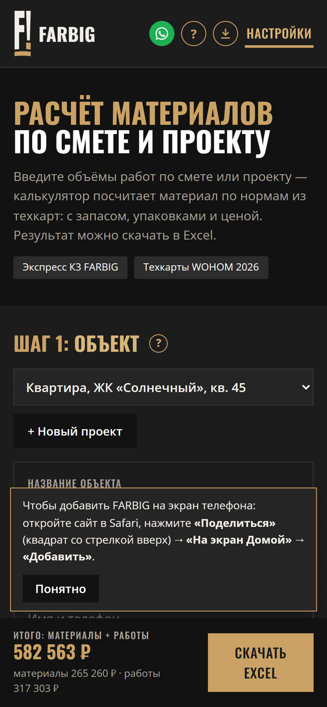
Квартира из 4 помещений (гостиная 5,5 × 4,2 м, спальня 4,5 × 3,6 м, кухня 4 × 3 м, коридор 5 × 1,6 м), потолки 2,7 м, технология К3, покраска в 2 слоя:
| Показатель | Значение |
|---|---|
| Материалы | 265 260 ₽ |
| Работы | 317 303 ₽ |
| Итого | 582 563 ₽ |
| Срок, бригада 2 чел. | ≈ 17 рабочих дней |
Цены и выработка ориентировочные — их можно заменить своими (разделы 8 и 11).
Каждый объект — отдельный проект со своими помещениями, работами и материалами.
Поля объекта: название, адрес, заказчик, высота потолков, комментарий. Они попадают в Excel и в смету. Высота подставляется во все помещения без своей высоты.
| Поле | Что вводить |
|---|---|
| Помещение | Название: «Кухня», «Спальня» |
| Длина, ширина, м | Размеры комнаты |
| Высота, м | Если отличается от общей |
| Проёмы, м² | Окна и двери — вычитаются из стен |
| Пол, периметр, стены | Считаются сами, можно вписать вручную |
| Цвет стен новое | Под строкой помещения, например «бежевый». Краска в списке закупки разделится по цветам |
Формулы: пол = длина × ширина; периметр = 2 × (длина + ширина); стены = периметр × высота − проёмы. Под списком — «Итого» по всем помещениям.
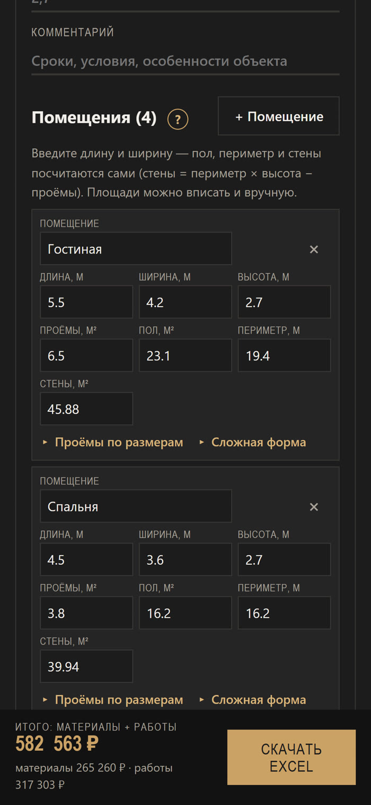
Под строкой помещения нажмите «▸ Проёмы по размерам» и впишите окна и двери: ширину, высоту и количество. Кнопки + Окно, + Дверь, + Проём, арка добавляют строки.
«▸ Сложная форма» — для ниш, выступов, коробов и Г-образных комнат. Длину и ширину основной части вводите как обычно, а участки добавляйте ниже:
Пример: Г-образная гостиная 5,5 × 4,2 м с частью 2 × 0,6 м — пол 24,3 м², периметр 20,6 м.
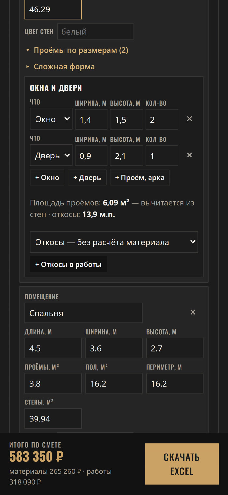
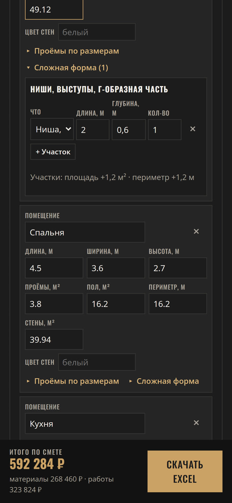
Дополнительно: слоёв покраски (обычно 2), галочки Потолок, Стены из ГКЛ (заделка швов), Покраска молдингов и плинтусов. Ниже видны объёмы: стены, пол и потолок, углы (4 × высота + примыкание к потолку), периметр.
«▸ Сравнить технологии» показывает таблицу по всем четырём схемам на ваших помещениях: материалы, работы, итог, разница с текущей и срок. Выбрать переключает технологию. Удобно, чтобы показать заказчику, за что он платит.
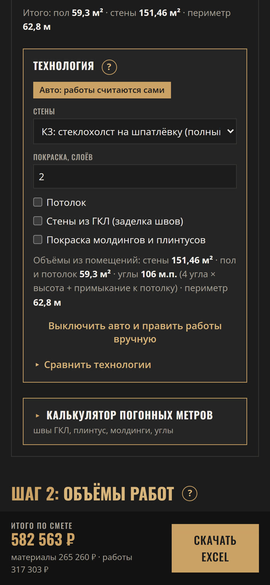
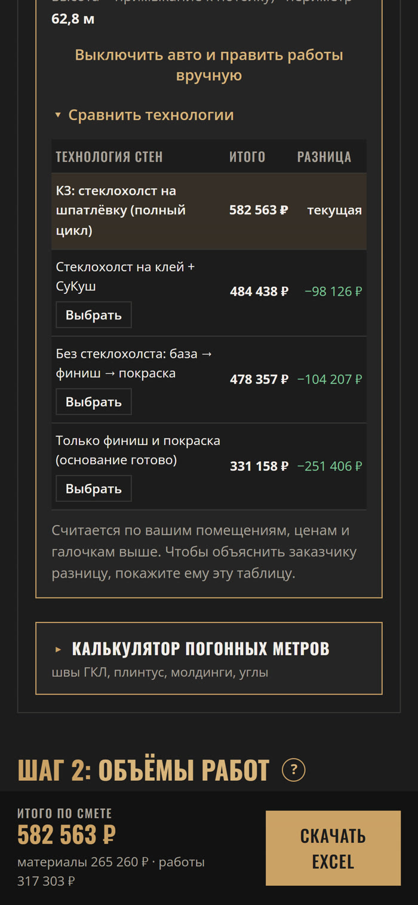
В конце шага 1 — строка «Калькулятор погонных метров», нажмите, чтобы раскрыть. Три режима:
Площадь ГКЛ, размер листа, высота стены, слои. Посчитает продольные и торцевые швы и примерное число листов (запас 5%). «Площадь = стены помещений» подставит площадь из шага 1.
Периметр минус двери (количество × ширина). «Периметр = все помещения» подставит сумму периметров.
Углы, откосы, примыкания: длина и количество одинаковых отрезков, + Отрезок — ещё строка.
В работы: выберите вид работы, при желании помещение, и нажмите + В работы.
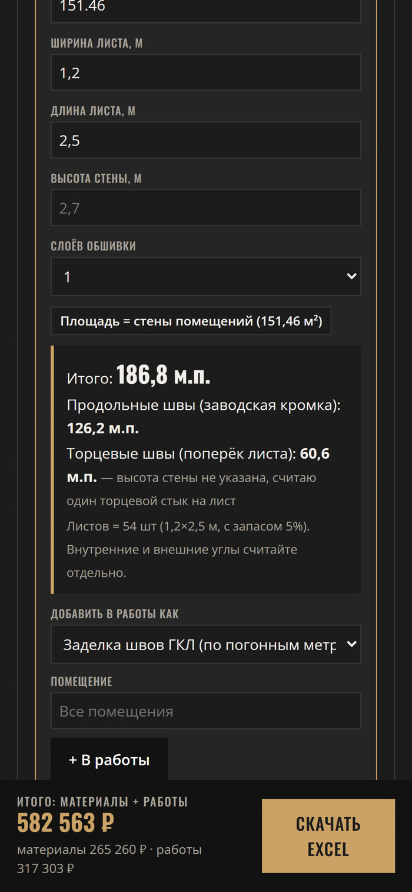
Шаг 2. Список свёрнут — нажмите на «Работы: N поз.». Справа в заголовке — стоимость работ.
| Поле | Что это |
|---|---|
| Вид работы | Из справочника по отделам |
| Помещение | Из ваших помещений или «Все помещения» |
| Объём | м², м.п., шт |
| Параметр | Толщина слоя, слои, расход — где есть |
+ Добавить работу — новая строка, Очистить всё — очистить проект (нажать дважды).
Над списком — поле «Человек в бригаде» и строка «Срок: ≈ N раб. дней». Срок = объём каждой работы ÷ выработка в день ÷ число людей + время на сушку между этапами.
Выработка и сушка — типовая оценка. Поправьте выработку под свою бригаду: Настройки → Цены работ, колонка «Выработка в день».
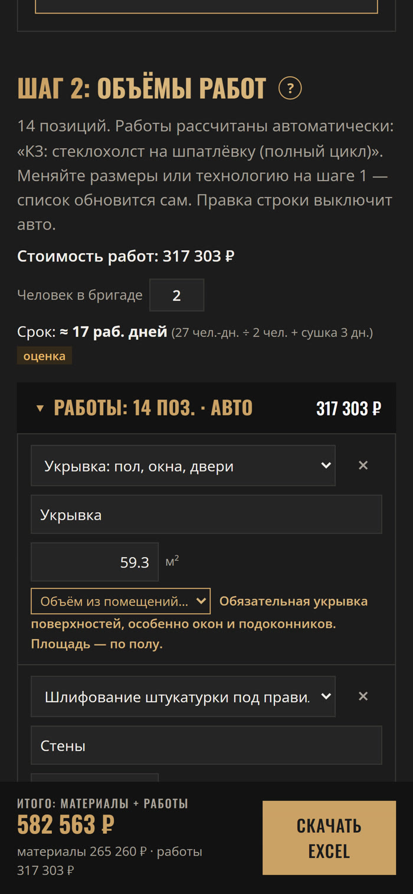
Шаг 2, блок «Надбавки и накладные». Справа в заголовке — сколько они добавляют к смете.
Проценты по умолчанию меняются в Настройки → Мастер → «Условия в смете». Всё попадает в смету, в Excel и в итог внизу экрана.
Блок «Этапы» — список работ по проекту. Отметьте выполненную работу галочкой — дата поставится сама. В заголовке видно, сколько сделано: в рублях и процентах.
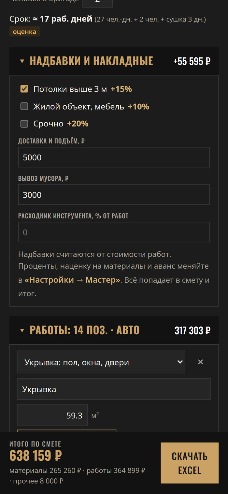
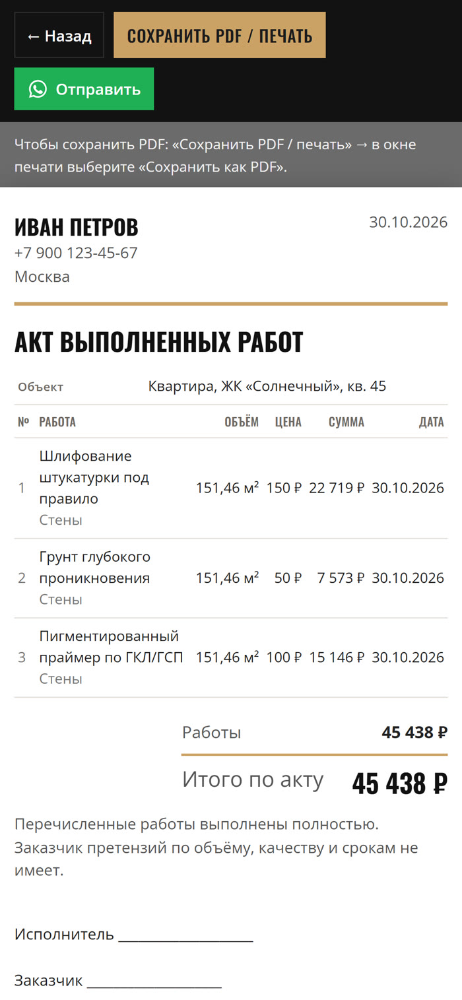
Шаг 3. Материалы сгруппированы по отделам, в заголовке — число материалов и сумма. Развернуть всё открывает всё сразу.
| Колонка | Что значит |
|---|---|
| Нужно | Расход по нормам с запасом |
| Купить | Целое число упаковок: «3 × мешок 25 кг» |
| Цена | За упаковку, можно поправить |
| Сумма | Упаковки × цена |
Внизу страницы — «Нормы и источники» по каждой работе.
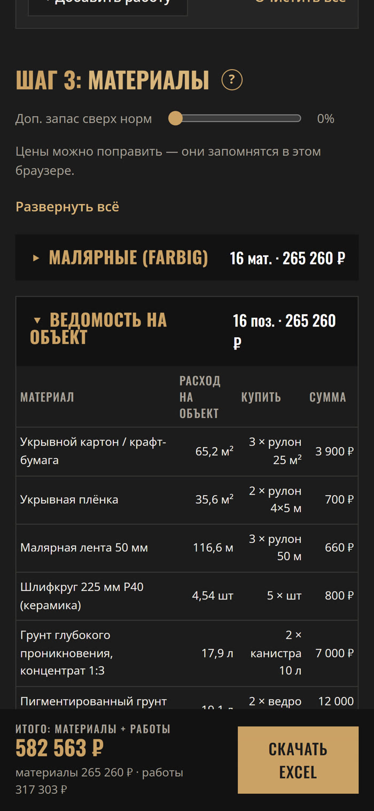
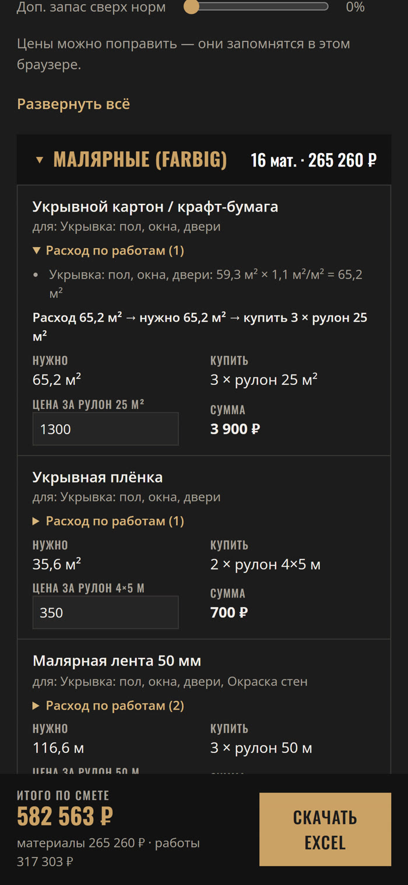
Список закупки одной таблицей: материал, расход, сколько купить, сумма.
«Итого по смете» — сколько заплатит заказчик: материалы, работы и «прочее» (надбавки, накладные, наценка минус скидка). Пересчитывается сразу.
| Лист | Содержимое |
|---|---|
| Материалы | Количество, упаковки, цены. Суммы — формулами |
| Расход по работам | Расшифровка расхода |
| Работы | Объёмы, цены, сумма работ |
| Нормы и источники | Нормы и требования техкарт |
| Помещения | Размеры, пол, периметр, стены |
| Итог | Материалы по закупке, работы, надбавки, скидка, всего для заказчика, аванс, срок |
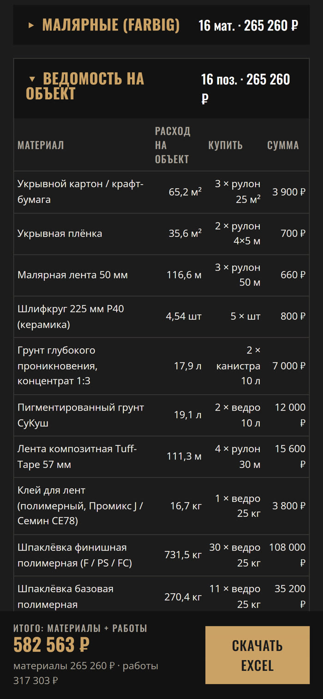
Шаг 4 — аккуратная смета с вашими данными. Закупочные цены материалов заказчик не видит.
В смете: шапка мастера и дата, объект, работы с объёмами и ценами, материалы, надбавки и скидка, итог, аванс («Аванс 50% — …, остаток по этапам»), срок, примечание и строки для подписей.
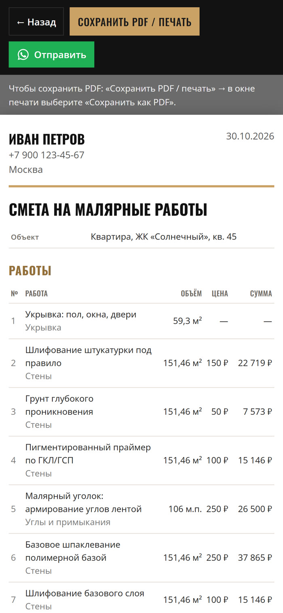
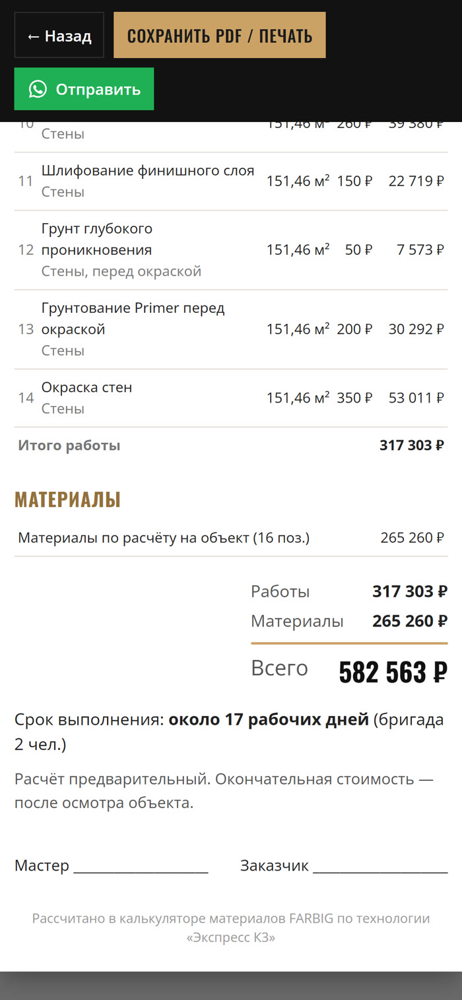
Настройки в верхней полосе. Всё сохраняется сразу.
Все работы по отделам. Изменить — название, единица, параметр, материалы и нормы. + Новый вид работ — своя работа. Изменённые можно вернуть «Сбросить к стандарту».
Цена работы, расход, упаковка и цена материалов. Материал общий для всех работ, где используется. Поиск и + Новый материал.
Ваша расценка за единицу и выработка в день на одного человека — по ней считается срок.
Переименовать, поменять порядок, добавить, удалить.
Имя, телефон, город и примечание для шапки сметы. Условия в смете новое: наценка на материалы, аванс, расходник инструмента, проценты надбавок. Хранятся только на телефоне.
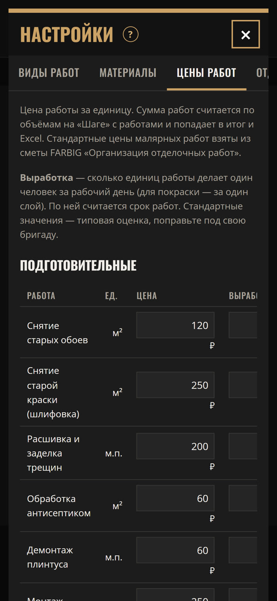
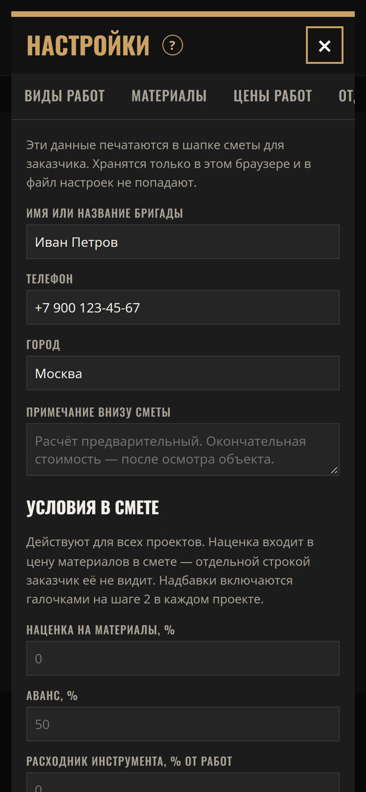
Проекты хранятся только в браузере. Делайте резервную копию — особенно перед сменой телефона или очисткой браузера.
Скачать файл настроек — ваши работы, материалы, цены, выработка и отделы. Бригада загружает его на этой же вкладке, и у всех одинаковые нормы и цены. Загрузка заменяет текущие настройки. Проекты и данные мастера в файл настроек не входят.
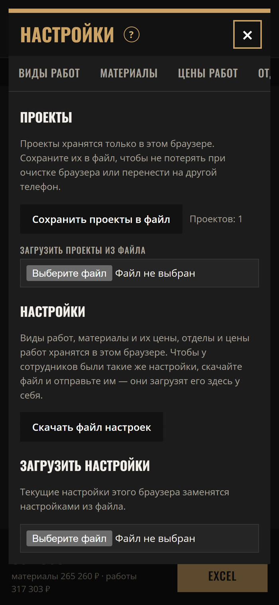
Только в браузере на вашем устройстве. На сервер не отправляются, никто, кроме вас, их не видит.
«Настройки → Обмен»: сохраните проекты в файл и загрузите на новом телефоне. Нормы и цены — файлом настроек там же.
Материал продаётся упаковками — калькулятор округляет вверх.
Нет, это оценка по типовой выработке. Впишите выработку своей бригады в «Настройки → Цены работ».
Ориентировочные. Впишите цены своего магазина и свои расценки — калькулятор запомнит.
«Настройки → Виды работ → + Новый вид работ» — задайте материалы и нормы.
Раскройте «Расход по работам» под материалом. Если ошибка в калькуляторе — напишите нам.
Да, после первого открытия. Excel и смета тоже.
Калькулятор в тестовом режиме, и нам важно ваше мнение: что неудобно, где ошибка в нормах, чего не хватает. Нажмите значок WhatsApp («Группа») в верхней полосе — откроется группа FARBIG, где можно задать вопрос и оставить замечание.
Сайт использует cookies и Яндекс Метрику, чтобы понимать, как люди пользуются калькулятором. Подробнее — в «Политике конфиденциальности» внизу страницы калькулятора.